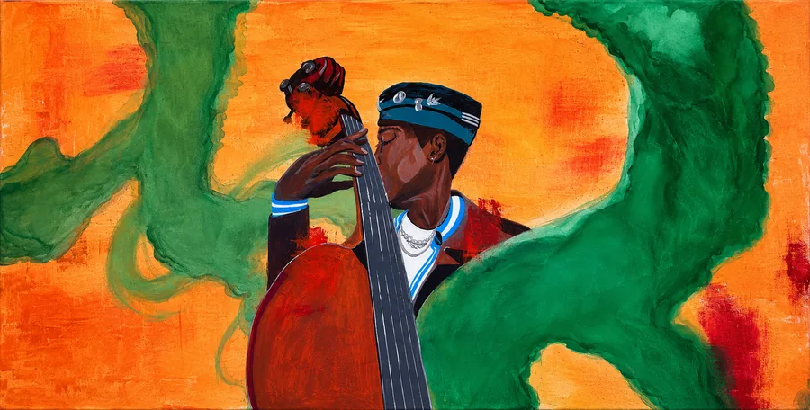
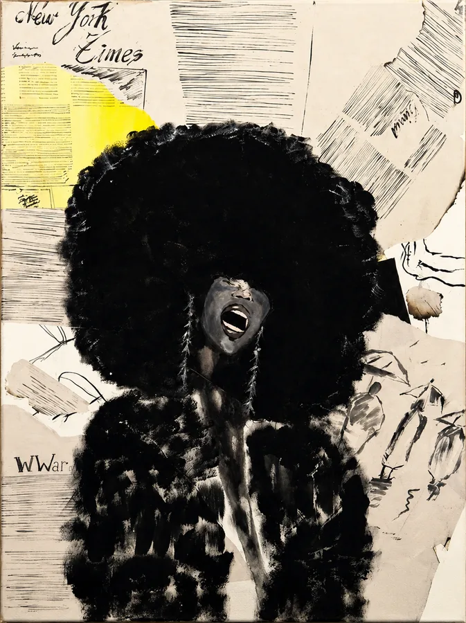

Série en cours
Peindre ce que les mots taisent.
Indirah — peintre, figures & émotions.
Fragments d’un geste
-
Le geste
Tout commence par un mouvement. Une intuition, une trace, une présence encore invisible.
-
La matière
Couleur après couleur, la forme cherche sa place. L’œuvre se construit, puis se révèle.
-
La révélation
Une nouvelle œuvre d’Indirah rejoindra bientôt la collection.
Jeffrey — film d’annonce
Une évocation visuelle de la naissance de Jeffrey, jusqu’à sa révélation. 15 secondes, avec son.
Le film ne peut pas être lu pour le moment. Télécharger le film (MP4, 4 Mo)
Aperçu
Quelques œuvres

